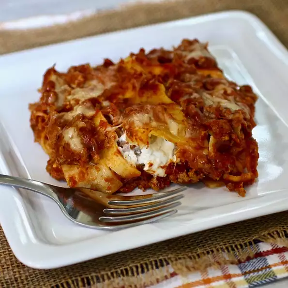

Overnight Lasagna

As you can see on the picture, this beautiful Overnight Lasagna doesn't only look delicious but gives you all your calories you need in the day.
The recipe is quite easy and will guide you to make this beautiful piece of food.
Ingredients:
- 1½ pounds ground beef
- 1 (30 ounce) jar marinara sauce
- ¾ cup water
- 1 teaspoon salt
- 12 lasagna noodles
- 1 (16 ounce) package cottage cheese
- 12 ounces grated mozzarella cheese
- ½ cup grated Parmesan cheese
Steps:
- Cook the ground beef in a large saucepan over medium-high heat until browned and no longer pink, about 5 minutes; drain fat. Stir in the marinara sauce, water, and salt. Bring to a boil. Remove sauce from heat.
- Arrange 6 noodles in a 9x13-inch baking dish, breaking if necessary to fit. Spoon 1/2 of the sauce over noodles. Top with 1/2 of the cottage cheese and 1/2 of the mozzarella cheese. Repeat layers with remaining noodles, sauce, cottage cheese, and mozzarella cheese. Top with Parmesan cheese. Cover tightly with foil; refrigerate overnight.
- Preheat an oven to 350 degrees F (175 degrees C).
- Bake lasagna, covered, until noodles are soft, cheese is melted, and sauce is bubbly, about 1 hour. Allow to sit for 10 minutes before serving.